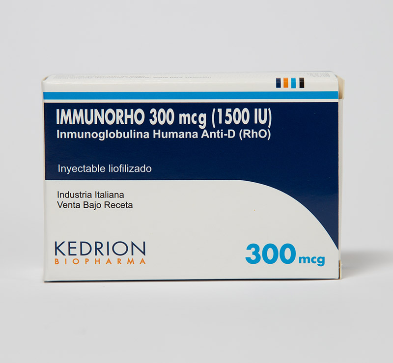

Immunohro®
Principio activo: Inmunoglobulina Humana Anti-D (Rh0)
Presentación: Frasco Amp. 300 mcg (1500 U.I.)
Indicaciones:
- Profilaxis de la inmunización anti–D (Rho) en mujeres Rh negativas (Rho, D) y en mujeres Du positivas. La sensibilización se produce particularmente después del parto, pero también puede aparecer en el transcurso del embarazo.
- Asimismo, la aminocentesis, la versión cefálica externa, los traumatismos abdominales, la hemorragia preparto, el embarazo ectópico o la extracción de muestras de vellosidades coriónicas, así como la amenaza de aborto y el aborto, constituyen episodios potencialmente sensibilizantes.
- Profilaxis de la inmunización anti –D (Rho) en personas Rho (D) negativas después de transfusiones incompatibles de sangre Rh positivo (D), o de concentrados de eritrocitos.
Almacenamiento: hasta 25°C
GLN: 7798087803531